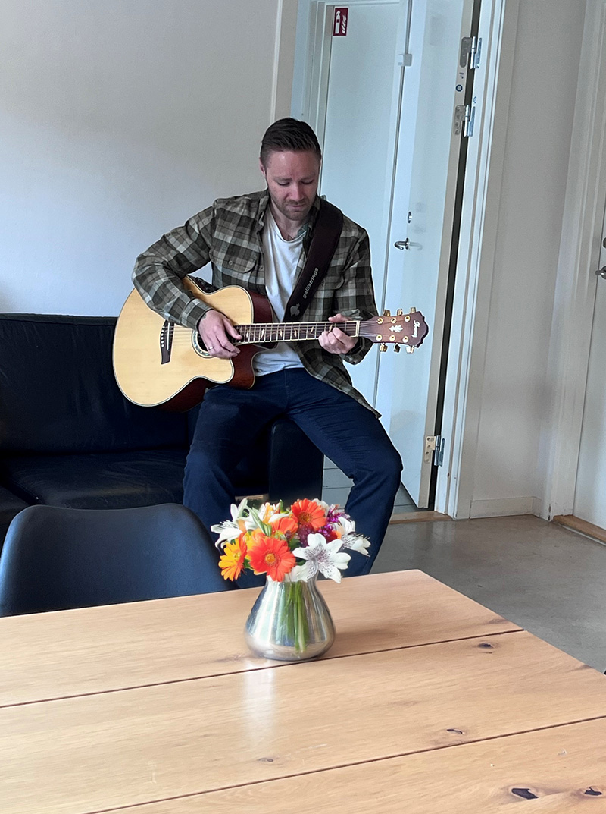
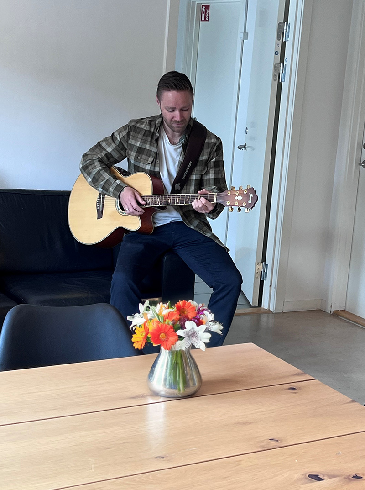
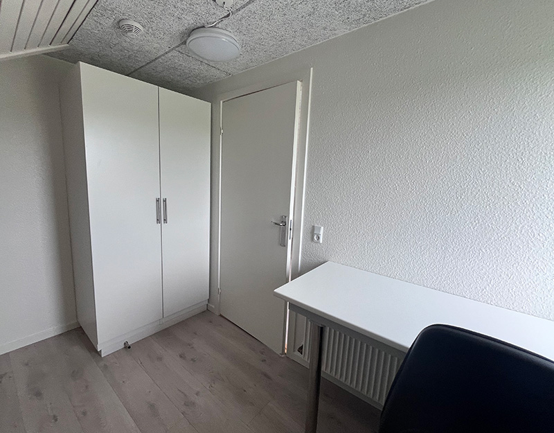
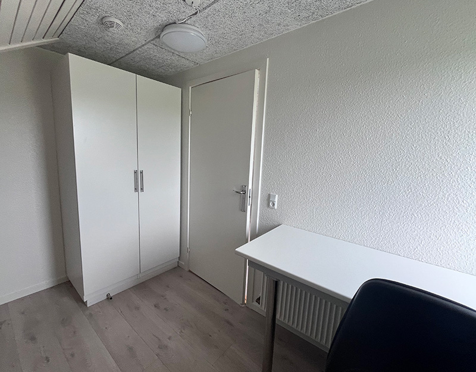

Mandag
Svømmedag
Vi besøger svømmehallen med fokus på bevægelse og sanseoplevelser.

På Søttruphus lægger vi vægt på at skabe en meningsfuld og varieret hverdag. Vi er et bosted for voksne med autismespektrumforstyrrelser og tilbyder en bred vifte af aktiviteter, som beboerne kan vælge imellem – med fokus på det, der interesserer og motiverer den enkelte. Der er blandt andet mulighed for at være kreativ i værkstedet, spille eller lytte til musik, deltage i madlavning og meget mere.
Hverdagen byder også på oplevelser i det fri. Søttruphus ligger naturskønt med adgang til store udearealer, hvor der er plads til både ro og bevægelse. Her kan man gå ture, cykle eller bare nyde haven. Vi afholder desuden fælles arrangementer i løbet af året, som skaber fællesskab og styrker relationer – f.eks. vores årlige julearrangement med beboere og pårørende.


 

Hverdagen på Søttruphus bygger på en autismepædagogisk tilgang, hvor struktur, forudsigelighed og tydelige rammer er med til at skabe tryghed. Vi arbejder med faste ugeskemaer og visuel støtte, som hjælper den enkelte med at navigere i hverdagen og få overblik.
Den pædagogiske indsats tilpasses beboerens behov, og støtten gives med respekt for individuelle grænser og dagsform. Nogle har brug for en detaljeret dagsplan, andre for fleksibilitet og ro. Fælles er, at vi møder beboeren med nærvær og forståelse – og støtter udviklingen af selvstændighed og trivsel i eget tempo.

Vi arbejder med faste rammer og genkendelige aktiviteter, som skaber tryghed og struktur for vores beboere. Planen tilpasses individuelt og indeholder både daglige rutiner, fælles aktiviteter og tid til ro, med fri mulighed for at sige fra. Hver dag er der gå tur for dem der har lyst, og ugen byder på forskellige aktiviteter som kreative dage, havedag og svømning.
Svømmedag
Vi besøger svømmehallen med fokus på bevægelse og sanseoplevelser.
Kassedag
Dagen byder på puslespil og opgaver, der træner koncentration.
Kreadag
Vi arbejder med kreative projekter som maling, perler og klippe-klistre
Havedag
Udendørs aktiviteter med planter og havearbejde i roligt fællesskab.
Afslapningsdag
Ugen afsluttes med rolige aktiviteter, hvor beboerne selv vælger
På Søttruphus får hver beboer sin egen lejlighed – et privat, trygt og personligt rum.
Hver lejlighed indeholder:
Eget badeværelse
Kombineret stue- og soveområde
Indrettes efter beboerens ønsker og giver plads til både personlige ejendele og hyggelige rammer.
 
